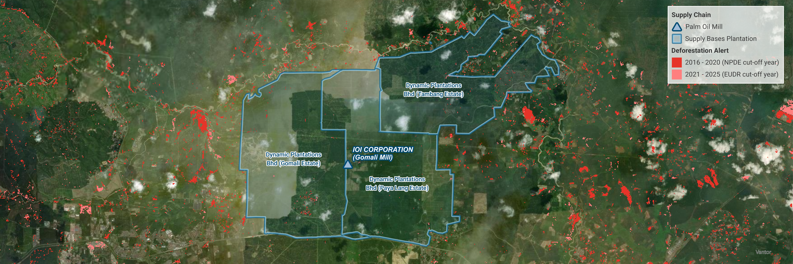

TRACEABILITY PROJECT
Oil Palm and Pulp & Paper Traceability
Have you ever imagined that traceability can tell us more than where a commodity comes from? It can reveal the actors involved in a supply chain, show how commodities move across landscapes, and help us understand the impacts of an industry on the environment and surrounding communities.

Project Overview
For almost four years, I have worked on traceability exercises for many brands across global commodity supply chains, including oil palm, cocoa, and pulp and paper. The work connects mills, plantation supply bases, commodity volumes, refineries, suppliers, and raw materials to understand how commodities move through the supply chain.
But traceability can tell us much more than where a commodity comes from. By linking supply-chain data with spatial and environmental information, we can identify deforestation linked to commodity production and support strategic planning to address or compensate for these impacts. It can also reveal forests, peatlands, and other sensitive ecosystems at risk from future commodity expansion, while helping identify communities that may be vulnerable to changes in the landscape.


FOREST FOOTPRINT PROJECT
KAO Palm Oil Forest Footprint
A forest footprint is more than measuring forest loss or identifying areas at risk of commodity-driven conversion. It connects where a company's supply chain operates with where forest conversion risks occur, helping identify priorities for investigation, mitigation, and more responsible sourcing.
Project Overview
I have worked on several forest footprint analyses, although only one has been publicly published so far: a study conducted for KAO in Riau Province, where KAO has its largest palm oil footprint in Indonesia. The analysis looked at the remaining forest and intact peat, as well as their overlap with customary land and areas lived by indigenous peoples and local communities. It also identified the largest remaining forest patches that may be at risk of conversion to oil palm through a multi-parameter spatial analysis. The results helped KAO better understand where forest and community-related risks are concentrated within its sourcing area, and supported the company in strengthening its engagement and actions with oil palm smallholders on the ground.
METHODOLOGY DEVELOPMENT
Oil Palm Suitability Area Methodology
Sometimes, a lack of documented methodology can lead to a bigger problem: inconsistent outputs that are difficult to justify, reproduce, and take responsibility for.


Overview & Framework
Working across multiple countries with international and local teams, I found that it can become difficult to align analyses when different teams need similar information. Without a standardised methodology, the same type of analysis may be approached differently depending on the country, project, or analyst.
Another challenge is that an analysis is often developed specifically for one or two countries or provinces. When a similar request comes up elsewhere, the analysis may need to be rebuilt from scratch, creating unnecessary work and using additional time and resources. Different analysts may also use different methods or threshold values based on different literature references. In some cases, methodologies may rely heavily on expert judgement rather than documented references, making the results more difficult to justify, reproduce, and stand behind.
To address these inconsistencies, I developed a standardised oil palm suitability methodology based on documented literature references and defined thresholds. The methodology was then used to create a global oil palm suitability layer, which can be clipped to any study area rather than rebuilding the analysis for each project.
I also developed a Python-based processing workflow to make the analysis easier to reproduce and update. This allows new or improved datasets to be incorporated more efficiently and provides a foundation for expanding the methodology to other commodities, while reducing repetitive manual processing.
Organization Map Design Guideline
For me, producing a map is a bit like producing art. Every cartographer has their own creativity and design language. From clean, minimalist maps with muted color palettes to more detailed, information-rich cartographic styles. But maps can also be part of an organization's visual identity, just like presentation templates and branding. A consistent map style creates a shared design language across different teams and projects, while still leaving room for creativity.


Overview & Guidelines
As everyone has their own creativity and design language, there is a need to ensure that this creativity still aligns with the organisation’s visual language and identity. When maps are produced by different cartographers, teams, or across different countries, this can otherwise result in very different visual styles, even when the maps are communicating similar types of information. That is why I see map design guidelines not as a way to limit creativity, but as a way to create a shared design language. They provide a common foundation for elements such as colour palettes, typography, symbols, labels, legends, and layout, while still allowing cartographers to make their own creative choices within that framework. In this way, maps can become part of an organisation’s visual identity, just like presentation templates and other communication materials. The goal is not to make every map look exactly the same, but to make them feel like they belong to the same organisation.
WEBMAP
Global Palm Oil Dashboard
I once had a challenge explaining a spatial dataset to a client using only a static map. It was difficult to interact with the map, highlight specific areas or features, or show the attributes behind the data. The presentation went well, and the key information was delivered, but it could have provided much more detail and interaction.
Project Overview
I really enjoy building interactive maps. They are especially helpful when explaining geospatial data to people without a GIS background. Most of my experience has been building interactive maps using ArcGIS Online platforms, such as ArcGIS StoryMaps and ArcGIS Web AppBuilder. However, ArcGIS Online has credit limitations, which means we cannot always upload and host all the data we need. Since these platforms also provide pre-built applications, there are some limitations when it comes to customizing the design and functionality of the webmap.
That’s why I’ve started learning how to build my own webmaps using libraries such as MapLibre, basemap tiles from MapTiler, and isochrones through the OpenRouteService API. Please enjoy clicking, hovering, and exploring my webmap above! But don't skip the welcome pop up 😉
AUTOMATION TOOLS
Python - Potential High Priority Patch of Forest Analysis
Don't you ever get bored or lose motivation when doing analyses that involve using the same tools over and over again? I personally find building Python scripts much more enjoyable than having to open ArcGIS Pro and click through the same toolboxes multiple times.
import arcpy
import os
from arcpy.sa import *
aprx = arcpy.mp.ArcGISProject("CURRENT")
map_name = aprx.listMaps("HPP")[0]
main_folder = r"E:\Forest Footprint\client_name\Dataset\HPP.gdb" #change path
forest_layer_name = "Forest_2024" #change name
forest_layer = os.path.join(main_folder, forest_layer_name)
map_name.addDataFromPath(forest_layer)
# create a forest core layer
forest_core_layer_name = f"{forest_layer_name}_core"
forest_core_layer = os.path.join(main_folder, forest_core_layer_name)
arcpy.analysis.Buffer(forest_layer, forest_core_layer, "-100 Meters", "FULL", "ROUND", "NONE", None, "GEODESIC")
print("WARNING 000636 is NORMAL because a negative or very small distance resulted in no geometry.")
# add table to indicate the core area and calculation
arcpy.management.AddField(forest_core_layer, "core_ha","DOUBLE")
arcpy.management.CalculateGeometryAttributes(forest_core_layer, [["core_ha", "AREA_GEODESIC"]], area_unit="HECTARES")
# the ‘patch’ field on the original forest layer need to be filled based on the size of the forest core layer
arcpy.management.AddField(forest_layer, "patch_core","TEXT")
# forest core classification
# marking the "HIGH FOREST PATCH"
arcpy.management.SelectLayerByAttribute(forest_core_layer_name, "NEW_SELECTION", "core_ha > 100")
arcpy.management.SelectLayerByLocation(forest_layer_name, "INTERSECT", forest_core_layer_name, None, "NEW_SELECTION", "NOT_INVERT")
arcpy.management.CalculateField(forest_layer_name, "patch_core", "'high'", "PYTHON3")
print("HIGH forest patch analysis is done.")
# marking the "MEDIUM FOREST PATCH"
arcpy.management.SelectLayerByAttribute(forest_core_layer_name, "NEW_SELECTION", "core_ha >= 10 AND core_ha <= 100")
arcpy.management.SelectLayerByLocation(forest_layer_name, "INTERSECT", forest_core_layer_name, None, "NEW_SELECTION", "NOT_INVERT")
arcpy.management.CalculateField(forest_layer_name, "patch_core", "'medium'", "PYTHON3")
print("MEDIUM forest patch analysis is done.")
# marking the "LOW FOREST PATCH"
arcpy.management.SelectLayerByAttribute(forest_core_layer_name, "NEW_SELECTION", "core_ha < 10")
arcpy.management.SelectLayerByLocation(forest_layer_name, "INTERSECT", forest_core_layer_name, None, "NEW_SELECTION", "NOT_INVERT")
arcpy.management.CalculateField(forest_layer_name, "patch_core", "'low'", "PYTHON3")
print("LOW forest patch analysis is done.")
# marking the "NONE FOREST PATCH"
arcpy.management.SelectLayerByAttribute(forest_layer_name, "NEW_SELECTION", "patch_core IS NULL")
arcpy.management.CalculateField(forest_layer_name, "patch_core", "'none'", "PYTHON3")
arcpy.management.SelectLayerByAttribute(forest_core_layer_name, "CLEAR_SELECTION")
arcpy.management.SelectLayerByAttribute(forest_layer_name, "CLEAR_SELECTION")
print("NONE forest patch analysis is done.")
# connectivity analysis
forest_connectivity_layer_name = f"{forest_layer_name}_connectivitypatch"
forest_connectivity_layer = os.path.join(main_folder, forest_connectivity_layer_name)
arcpy.cartography.AggregatePolygons(forest_layer, forest_connectivity_layer, "200 Meters")
# add field on the forest connectivity layer
arcpy.management.AddField(forest_connectivity_layer, "connectivity", "TEXT")
# forest connection classes analysis
# marking the "LOW CONNECTIVITY"
arcpy.management.SelectLayerByAttribute(forest_layer_name, "NEW_SELECTION", "patch_core IN ('low', 'none')")
arcpy.management.SelectLayerByLocation(forest_connectivity_layer_name, "INTERSECT", forest_layer_name, None, "NEW_SELECTION", "NOT_INVERT")
arcpy.management.CalculateField(forest_connectivity_layer_name, "connectivity", "'low connectivity'", "PYTHON3")
print("LOW connectivity analysis is done.")
# marking the "MEDIUM CONNECTIVITY"
arcpy.management.SelectLayerByAttribute(forest_layer_name, "NEW_SELECTION", "patch_core = 'medium'")
arcpy.management.SelectLayerByLocation(forest_connectivity_layer_name, "INTERSECT", forest_layer_name, None, "NEW_SELECTION", "NOT_INVERT")
arcpy.management.CalculateField(forest_connectivity_layer_name, "connectivity", "'medium connectivity'", "PYTHON3")
print("MEDIUM connectivity analysis is done.")
# marking the "HIGH CONNECTIVITY"
arcpy.management.SelectLayerByAttribute(forest_layer_name, "NEW_SELECTION", "patch_core = 'high'")
arcpy.management.SelectLayerByLocation(forest_connectivity_layer_name, "INTERSECT", forest_layer_name, None, "NEW_SELECTION", "NOT_INVERT")
arcpy.management.CalculateField(forest_connectivity_layer_name, "connectivity", "'high connectivity'", "PYTHON3")
arcpy.management.SelectLayerByAttribute(forest_layer_name, "CLEAR_SELECTION")
arcpy.management.SelectLayerByAttribute(forest_connectivity_layer_name, "CLEAR_SELECTION")
print("HIGH connectivity analysis is done.")
# reflecting the connectivity classes to the original forest layer
arcpy.management.AddField(forest_layer_name, "connectivity", "TEXT")
# reflecting the LOW connectivity
arcpy.management.SelectLayerByAttribute(forest_connectivity_layer_name, "NEW_SELECTION", "connectivity = 'low connectivity'")
arcpy.management.SelectLayerByLocation(forest_layer_name, "INTERSECT", forest_connectivity_layer_name, None, "NEW_SELECTION", "NOT_INVERT")
arcpy.management.CalculateField(forest_layer_name, "connectivity", "'low connectivity'", "PYTHON3")
print("LOW connectivity information transfer is done.")
# reflecting the MEDIUM connectivity
arcpy.management.SelectLayerByAttribute(forest_connectivity_layer_name, "NEW_SELECTION", "connectivity = 'medium connectivity'")
arcpy.management.SelectLayerByLocation(forest_layer_name, "INTERSECT", forest_connectivity_layer_name, None, "NEW_SELECTION", "NOT_INVERT")
arcpy.management.CalculateField(forest_layer_name, "connectivity", "'medium connectivity'", "PYTHON3")
print("MEDIUM connectivity information transfer is done.")
# reflecting the HIGH connectivity
arcpy.management.SelectLayerByAttribute(forest_connectivity_layer_name, "NEW_SELECTION", "connectivity = 'high connectivity'")
arcpy.management.SelectLayerByLocation(forest_layer_name, "INTERSECT", forest_connectivity_layer_name, None, "NEW_SELECTION", "NOT_INVERT")
arcpy.management.CalculateField(forest_layer_name, "connectivity", "'high connectivity'", "PYTHON3")
arcpy.management.SelectLayerByAttribute(forest_layer_name, "CLEAR_SELECTION")
arcpy.management.SelectLayerByAttribute(forest_connectivity_layer_name, "CLEAR_SELECTION")
print("HIGH connectivity information transfer is done.")
# PRIORITY PATCH classification
arcpy.management.AddField(forest_layer_name, "priority_patch", "TEXT")
# HIGH PRIORITY PATCH
# > Patch core high
# > Patch core medium - high connectivity
# > Patch core low & no core - high connectivity
arcpy.management.SelectLayerByAttribute(forest_layer_name, "NEW_SELECTION", "patch_core = 'high' OR connectivity = 'high connectivity'")
arcpy.management.CalculateField(forest_layer_name, "priority_patch", "'high priority patch'", "PYTHON3")
print("HIGH PRIORITY PATCH is created.")
# MEDIUM PRIORITY PATCH
# > Patch core medium - no high connectivity (medium & low connectivity)
arcpy.management.SelectLayerByAttribute(forest_layer_name, "NEW_SELECTION", "patch_core = 'medium' AND connectivity <> 'high connectivity'")
arcpy.management.CalculateField(forest_layer_name, "priority_patch", "'medium priority patch'", "PYTHON3")
print("MEDIUM PRIORITY PATCH is created.")
# LOW PRIORITY PATCH
# > Patch core low & no core - no high connectivity (medium & low connectivity)
arcpy.management.SelectLayerByAttribute(forest_layer_name, "NEW_SELECTION", "patch_core IN ('low', 'none') AND connectivity <> 'high connectivity'")
arcpy.management.CalculateField(forest_layer_name, "priority_patch", "'low priority patch'", "PYTHON3")
arcpy.management.SelectLayerByAttribute(forest_layer_name, "CLEAR_SELECTION")
print("LOW PRIORITY PATCH is created.")Project Overview
For example, I was building this Python script for ArcGIS Pro (using ArcPy) to identify potential high-priority forest patches. The methodology for this analysis is adapted from Steps 2–6 of the HCSA Toolkit. If I didn’t use Python, I would be constantly juggling between different toolboxes—especially Select Layer By Attribute → Select Layer By Location → Calculate Field, and then going back to Select Layer By Attribute again. Doing all of that manually can get a little bit annoying!
Excel VBA - Transfer Chart to PowerPoint
Another thing that can be pretty annoying is transferring charts from Excel to PowerPoint. If you’re unlucky, the chart can end up looking completely different in PowerPoint from how you originally designed it in Excel. And what if you need to do that for six reports, with 6 charts in each? That’s 36 charts to transfer and check manually!
Sub CheckIfPPTIsOpen()
Dim pptApp As Object
Dim pptPres As Object
Dim targetName As String
Dim isOpen As Boolean
' Read file name from Control sheet, cell D30
targetName = Trim(ThisWorkbook.Worksheets("control").Range("D30").Value)
isOpen = False
' Validate input
If targetName = "" Then
MsgBox "Cell D30 on the 'control' sheet is empty.", vbExclamation
Exit Sub
End If
' Get running PowerPoint instance
On Error Resume Next
Set pptApp = GetObject(, "PowerPoint.Application")
On Error GoTo 0
' If PowerPoint is not running
If pptApp Is Nothing Then
MsgBox "PowerPoint is not running.", vbInformation
Exit Sub
End If
' Check open presentations
For Each pptPres In pptApp.Presentations
If StrComp(pptPres.Name, targetName, vbTextCompare) = 0 Then
isOpen = True
Exit For
End If
Next pptPres
' Result
If isOpen Then
MsgBox "The presentation is currently open.", vbInformation
Else
MsgBox "The presentation is not open.", vbInformation
End If
End Sub
Function GetTargetPresentation() As Object
Dim pptApp As Object
Dim pptPres As Object
Dim targetName As String
targetName = Trim(ThisWorkbook.Worksheets("control").Range("D30").Value)
If targetName = "" Then Exit Function
On Error Resume Next
Set pptApp = GetObject(, "PowerPoint.Application")
On Error GoTo 0
If pptApp Is Nothing Then Exit Function
For Each pptPres In pptApp.Presentations
If StrComp(pptPres.Name, targetName, vbTextCompare) = 0 Then
Set GetTargetPresentation = pptPres
Exit Function
End If
Next pptPres
End Function
Sub WorkWithPresentation()
Dim pres As Object
Set pres = GetTargetPresentation()
If pres Is Nothing Then
MsgBox "Presentation not found or not open.", vbExclamation
Exit Sub
End If
' Example action
MsgBox "Working with: " & pres.Name
End Sub
Sub TransferChartToPPT()
Dim pres As Object
Dim ws As Worksheet
Dim sheetName As String
Const FONT_NAME As String = "Heebo"
' Get target presentation
Set pres = GetTargetPresentation()
If pres Is Nothing Then
MsgBox "Target presentation not found or not open.", vbExclamation
Exit Sub
End If
' Get worksheet name
sheetName = Trim(ThisWorkbook.Worksheets("control").Range("D36").Value)
If sheetName = "" Then
MsgBox "Control!D36 is empty.", vbExclamation
Exit Sub
End If
On Error Resume Next
Set ws = ThisWorkbook.Worksheets(sheetName)
On Error GoTo 0
If ws Is Nothing Then
MsgBox "Worksheet '" & sheetName & "' not found.", vbCritical
Exit Sub
End If
' ===== CHART ? SLIDE MAPPING =====
PasteChart ws, pres, "Chart", 2, "Chart Placeholder", FONT_NAME
PasteChart ws, pres, "Chart 1", 3, "Chart Placeholder 1", FONT_NAME
PasteChart ws, pres, "Chart 2", 4, "Chart Placeholder 2", FONT_NAME
PasteChart ws, pres, "Chart 3", 6, "Chart Placeholder 3", FONT_NAME
PasteChart ws, pres, "Chart 4", 7, "Chart Placeholder 4", FONT_NAME
PasteChart ws, pres, "Chart 5", 8, "Chart Placeholder 5", FONT_NAME
MsgBox "All charts copied successfully with Heebo font applied.", vbInformation
End Sub
Private Sub PasteChart(ws As Worksheet, pres As Object, _
chartName As String, slideIndex As Long, _
placeholderName As String, fontName As String)
Dim pptSlide As Object
Dim chartShape As Shape
Dim placeholderShape As Object
Dim pastedShape As Object
Dim pptChart As Object
Dim phLeft As Single, phTop As Single, phWidth As Single, phHeight As Single
Dim s As Object
' Get chart from Excel
On Error Resume Next
Set chartShape = ws.Shapes(chartName)
On Error GoTo 0
If chartShape Is Nothing Then
MsgBox "'" & chartName & "' not found on worksheet.", vbCritical
Exit Sub
End If
' Get PowerPoint slide
If pres.Slides.Count < slideIndex Then
MsgBox "Slide " & slideIndex & " does not exist.", vbExclamation
Exit Sub
End If
Set pptSlide = pres.Slides(slideIndex)
' Get placeholder
On Error Resume Next
Set placeholderShape = pptSlide.Shapes(placeholderName)
On Error GoTo 0
If placeholderShape Is Nothing Then
MsgBox "'" & placeholderName & "' not found on Slide " & slideIndex & ".", vbExclamation
Exit Sub
End If
' Store placeholder size and position
phLeft = placeholderShape.Left
phTop = placeholderShape.Top
phWidth = placeholderShape.Width
phHeight = placeholderShape.Height
placeholderShape.Delete
' Copy and paste chart as editable (linked) chart
chartShape.Copy
Set pastedShape = pptSlide.Shapes.PasteSpecial(DataType:=11)(1)
With pastedShape
.Left = phLeft
.Top = phTop
.Width = phWidth
.Height = phHeight
.ZOrder 1
End With
' ===== APPLY FONT STANDARDS =====
Set pptChart = pastedShape.Chart
With pptChart
' Chart Title – 18 pt
If .HasTitle Then
With .ChartTitle.Format.TextFrame2.TextRange.Font
.Name = fontName
.Size = 18
End With
End If
' Legend – 12 pt
If .HasLegend Then
With .Legend.Format.TextFrame2.TextRange.Font
.Name = fontName
.Size = 12
End With
End If
' Axes – 14 pt
On Error Resume Next
.Axes(1).TickLabels.Font.Name = fontName
.Axes(1).TickLabels.Font.Size = 14
.Axes(2).TickLabels.Font.Name = fontName
.Axes(2).TickLabels.Font.Size = 14
' Axis titles – 14 pt
If .Axes(1).HasTitle Then
.Axes(1).AxisTitle.Format.TextFrame2.TextRange.Font.Name = fontName
.Axes(1).AxisTitle.Format.TextFrame2.TextRange.Font.Size = 14
End If
If .Axes(2).HasTitle Then
.Axes(2).AxisTitle.Format.TextFrame2.TextRange.Font.Name = fontName
.Axes(2).AxisTitle.Format.TextFrame2.TextRange.Font.Size = 14
End If
' Data Labels – 14 pt (reliable method)
For Each s In .Series
If s.HasDataLabels Then
s.DataLabels.Font.Name = fontName
s.DataLabels.Font.Size = 12
End If
Next s
On Error GoTo 0
End With
End SubProject Overview
The VBA macro I created helps me transfer charts to PowerPoint seamlessly, without having to manually adjust the design again in PowerPoint. This can save a lot of time, especially when working with multiple reports and charts.
I can also add a button to the Excel file and assign the macro to it. So whenever I finish creating a chart, I can simply click the button, and it’s automatically transferred to PowerPoint!